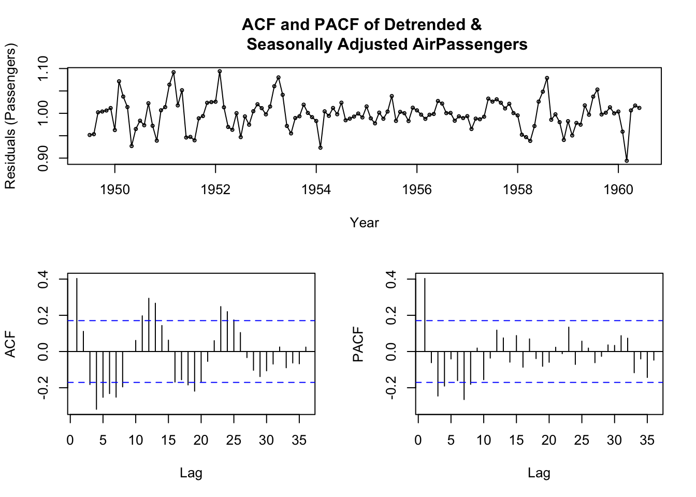
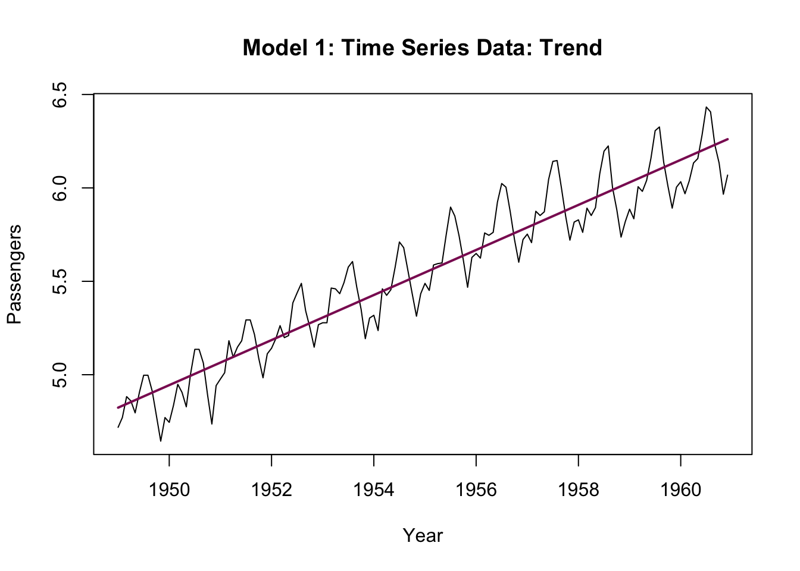
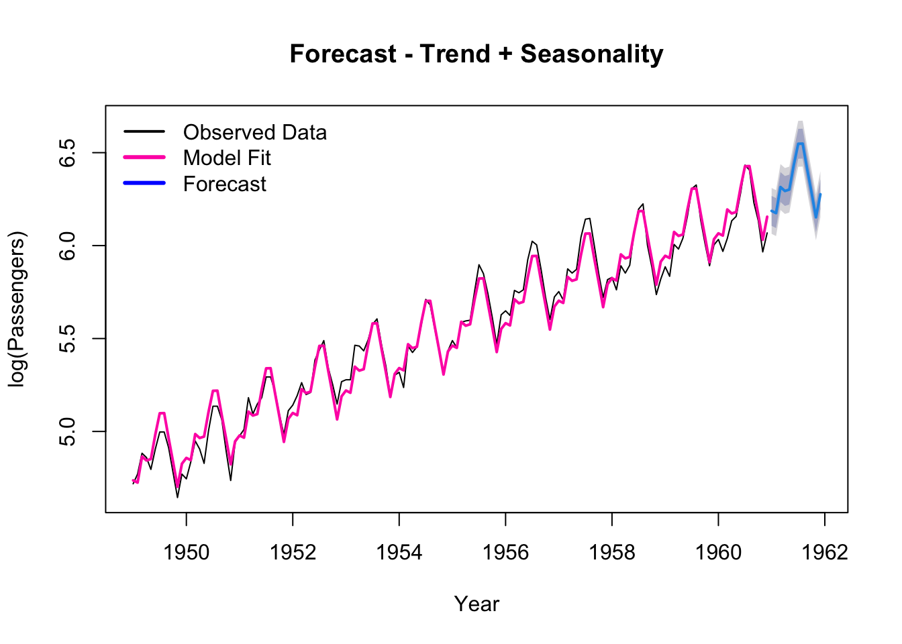

# load data
AirPassengers <- AirPassengersEconomics 144 - AirPassengers
This project analyzes the AirPassengers dataset, exploring additive and multiplicative decompositions to understand trends, seasonality, and residual structures. I compared decomposition methods, evaluate autocorrelation, and select models for forecasting a year ahead, including a log-transformed trend + seasonal model and ETS. The analysis provides insights into international airline passenger growth and seasonal travel patterns.
Trend and Seasonal Adjustments
(a)
Perform an additive decomposition of your series. Remove the trend and seasonality, and comment on the ACF and PACF of the residuals (i.e., what is left after detrending and seasonally adjusting the series). Comment on the results.
# additive decomposition of the series
dcmp_add_ap <- decompose(ts(AirPassengers, start = c(1949, 1), freq = 12),
"additive")
plot(dcmp_add_ap, xlab = "Year")
passengers <- ts(AirPassengers, start = c(1949, 1), frequency = 12)
# remove the trend and seasonality
# trend component
ap_trend <- dcmp_add_ap$trend
# seasonal component
ap_seasonal <- dcmp_add_ap$seasonal
# Detrend and Seasonally Adjust: Y - T - S
detrend_seas_adj_ap <- na.omit(passengers - ap_trend - ap_seasonal)
# ACF and PACF plot
tsdisplay(detrend_seas_adj_ap, main = "ACF and PACF of Detrended & Seasonally
Adjusted AirPassengers", xlab = "Year",
ylab = "Residuals (Passengers)")
The additive decomposition of the series is ideal when seasonal fluctuations remain relatively constant over time. However, after detrending and seasonally adjusting the AirPassengers data, the ACF and PACF plots reveal significant autocorrelation, indicating that the additive decomposition did not fully remove underlying patterns. Autocorrelation is evident in both ACF and PACF plots, as several residuals extend beyond the 95% confidence bounds. In particular, the PACF shows a strong spike at lag 1, suggesting a lack of stationarity and the persistence of trend or seasonal effects. The large autocorrelations observed in the ACF plot further imply dependence in the number of international airline passengers over time. Overall, these results suggest that a multiplicative decomposition or a transformation may provide a better representation of the data’s structure.
(b)
Perform a multiplicative decomposition of your series. Remove the trend and seasonality, and comment on the ACF and PACF of the residuals (i.e., what is left after detrending and seasonally adjusting the series). Comment on the results.
dcmp_mult_ap <- decompose(ts(AirPassengers, start = c(1949, 1), freq = 12),
"multiplicative")
plot(dcmp_mult_ap, xlab = "Year")
# remove the trend and seasonality
# trend component
ap_mult_trend <- dcmp_mult_ap$trend
# seasonal component
ap_mult_seasonal <- dcmp_mult_ap$seasonal
# Detrend and Seasonally Adjust: Y / T / S
detrend_seas_adj_mult_ap <- na.omit((passengers / ap_mult_trend) /
ap_mult_seasonal)
tsdisplay(detrend_seas_adj_mult_ap, main = "ACF and PACF of Detrended &
Seasonally Adjusted AirPassengers", xlab = "Year",
ylab = "Residuals (Passengers)")
The multiplicative decomposition of the series is most ideal when seasonal fluctuations vary in magnitude over time. After detrending and seasonally adjusting the AirPassengers data, the ACF and PACF plots reveal some remaining autocorrelation; however, the multiplicative decomposition aligns more closely with the underlying structure of the data than the additive model. Autocorrelation is still evident in both plots, as several residuals extend beyond the 95% confidence bounds. In particular, the PACF plot shows a larger spike at lag 1, suggesting a lack of stationarity and the persistence of trend or seasonal effects. The large autocorrelations observed in the ACF plot further indicate some dependence in the number of international airline passengers over time. Overall, while the multiplicative decomposition provides a better fit to the data’s structure than the additive approach, some systematic patterns remain in the residuals.
(c)
Which decomposition is better, additive or multiplicative? Why?
The multiplicative decomposition provides a substantially better fit to the data than the additive decomposition. In the PACF plot of the multiplicative model, only a few larger spikes extend beyond the 95% confidence bounds, whereas the additive decomposition shows more frequent and pronounced lags. Furthermore, in the ACF plots, the autocorrelations from the multiplicative decomposition decay more rapidly than those from the additive model. Although some underlying patterns persist in the residuals of the multiplicative model, the overall dependence on the number of international airline passengers over time is weaker compared to the additive decomposition, indicating a better adjustment to the data’s structure.
(d)
Based on the two decompositions, and interpretation of the random components, would your models for the cycles be similar (additive vs. multiplicative) or very different? Why?
# Additive Decomposition - Random Component
ap_random <- dcmp_add_ap$random
plot(ap_random, xlab = "Year", ylab = "Residuals (Passengers)",
main = "Additive Decomposition: Random Component")
# Multiplicative Decomposition - Random Component
ap_mult_random <- dcmp_mult_ap$random
plot(ap_mult_random, xlab = "Year", ylab = "Residuals",
main = "Multiplicative Decomposition: Random Component")
Based on the decomposition and the random components, the cycles in the additive and multiplicative models would be rather different. In the additive decomposition, the random component shows residuals that are larger at the beginning and end of the series but narrower in the middle, indicating non-constant variance over time. This pattern suggests that the additive model does not adequately account for the changing amplitude of the cyclical fluctuations as the number of passengers increases. In contrast, the multiplicative model produces residuals that are more evenly scattered over the years, appearing closer to random noise. This reflects that cyclical movements in passenger counts grow proportionally with the trend. Additionally, the multiplicative decomposition more accurately represents the cyclical structure of the AirPassengers data, where both the trend and the magnitude of seasonal and cyclical varianations increase over time.
(e)
Plot the seasonal factors and comment on the plot.
# multiplicative, therefore, use log-transformation to stablize variance
lpassengers <- log(passengers)
# fit the linear models
fit1 <- tslm(lpassengers ~ trend)
fit2 <- tslm(lpassengers ~ season)
fit3 <- tslm(lpassengers ~ trend + season)
# plot the fitted models
plot(lpassengers, main = "Model 1: Time Series Data: Trend",
ylab = "Passengers", xlab = "Year")
lines(fit1$fitted.values, col = "maroon4", lwd = 2)
plot(lpassengers, main = "Model 2: Time Series Data: Seasonality",
ylab = "Passengers", xlab = "Year")
lines(fit2$fitted.values, col = "maroon3", lwd = 2)
plot(lpassengers, main = "Model 3: Time Series Data: Trend + Seasonality",
ylab = "Passengers", xlab = "Year")
lines(fit3$fitted.values, col = "maroon2", lwd = 2)
# Compare the models with AIC and BIC tests
AIC(fit1,fit2,fit3) df AIC
fit1 3 -155.5887
fit2 13 185.4405
fit3 14 -390.5952BIC(fit1,fit2,fit3) df BIC
fit1 3 -146.6793
fit2 13 224.0480
fit3 14 -349.0178# Plot the seasonal factors
fit <- tslm(lpassengers ~ season + 0)
plot(fit$coef, type = "l", ylab = "Seasonal Factors", xlab = "Month",
main = "Seasonal Factors for Air Passengers", lwd = 2, col = "dodgerblue2")
To preface, we had taken the log-transformation of the passengers due to the multiplicative nature of the time series, in an attempt to stabilize the variance. The seasonal factor plot for the AirPassengers data show clear within-year patterns. Passenger numbers are lowest in the early months (January-February), rise steadily through the spring, and peak during the summer months (July-August), with a smaller increase in December. This is consistent with seasonal travel behavior as people tend travel more due to factors such as warmer weather, school breaks and holidays, and the holiday season. The fitted models indicate that including both trend and seasonality provides the best representation to the data, as confirmed by the results of the AIC and BIC tests (having the lowest values for the trend + seasonality model).
(f)
Based on your analysis thus far, choose a model that includes your preferred trend and seasonal model to forecast 12-steps ahead, and show the plot of the data, respective fit, and forecast.
# the data is multiplicative (variance grows with the trend)
# log-transformed trend and seasonality model
lpassengers <- log(passengers)
# fit the preferred linear trend
fit_pref <- tslm(lpassengers ~ trend + season)
plot(forecast(fit_pref, h = 12), main = "Forecast - Trend + Seasonality",
xlab = "Year", ylab = "log(Passengers)")
lines(fit_pref$fitted.values, col = "maroon1", lwd = 2)
legend("topleft", legend = c("Observed Data", "Model Fit", "Forecast"),
col = c("black", "maroon1", "blue"), lwd = c(2, 3, 3), bty = "n")
# improve the forecast using ets
fit_ets <- ets(passengers)
plot(fit_ets)
accuracy(fit_ets) ME RMSE MAE MPE MAPE MASE ACF1
Training set 1.567359 10.74726 7.791605 0.4357799 2.857917 0.2432573 0.03945056plot(forecast(fit_ets, level = c(50, 80, 95), h = 12))
Based on the analysis thus far, the preferred model for forecasting the AirPassengers data is the log-transformed linear trend + seasonal model, which accounts for the multiplicative nature of the data. The logarithmic transformation stabilizes the variance and converts the multiplicative relationship between trend and seasonality into an additive one, making the model more suitable for linear regression analysis. The model captures the observed time series well and our forecast for the next 12 months, illustrated with a continued upwards trend alongside recurring seasonal peaks. To improve the accuracy of the forecast, an ETS model was also fitted to the original data. The ETS forecast produces similar results to the regression model but automatically adjusts for changing seasonal amplitudes, providing a more flexible and robust forecast of future passenger numbers on international airlines.
Conclusions and Future Work
From our analysis, the log-transformed trend and seasonal model was our preferred choice to represent and forecast the AirPassengers dataset. The model captures the upward growth in air travel and the repeating seasonal factors, while the log transformation stabilizes the variance and recognizes the multiplicative nature of the series through a linear framework. The residual diagnostics (the AFC/PACF plots) and the decomposition comparisons suggest that this model best accounts for and removes autocorrelation; however, we had observed that some underlying patterns remained. When forecasting 12 months ahead, the model projected a continued upward trend in passenger numbers for international airlines with recurring seasonal peaks.
We may further improve our model by incorporating exogenous variables such as airline capacity, airport infrastructure, and expansion, or consider factors such as population growth. We may additionally investigate non-linear models to better understand the more complex dynamics, as autocorrelations remain. Finally, while the ETS model has already been considered, it may offer a more flexible structure for modeling changing seasonal amplitudes and evolving trend structures over time.